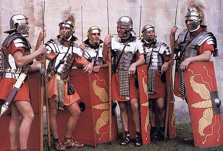
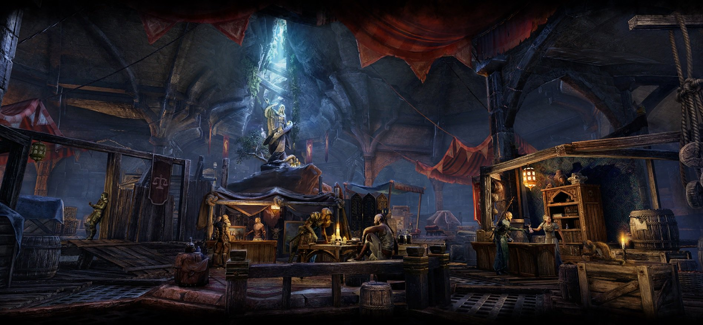
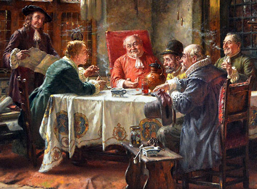
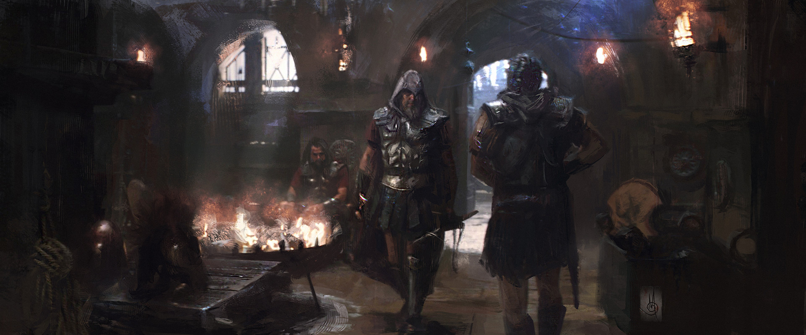

Imperial Guards
Formed from the remnants of the Imperial Army, the Imperial Guards are an independent, influential and powerful faction, maintaining order and preventing open war between Noble Houses. While the Noble Houses squabble amongst themselves, cloaked in subterfuge, espionage and counter-espionage, the Guards are more idealistic. Their primary goal is the restoration of the Empire to its former glory, regardless of how unrealistic this seems at the present.
Thieves Guild
The Forty Thieves is an organized group of professional thieves based in Teron that provides mutual support for the illegal endeavors of its members and their clients. It is one of several join-able factions that appear in Age of Decadence. Little is known about when and how the Forty Thieves of Teron was founded, but it is rumored to have been around as long as Empire has. As the time continued, the Forty Thieves slipped further and further into obscurity and the members and regular clients began to leave.
Commercium
Trade and Merchant Guilds have always existed but in the shadow of the apocalypse wrought by the power of the sword, the power of gold has become a far greater influence in the affairs of state. The Head Merchants have now centralized, controlling all trade. Caravans, tariffs, mines and marketplaces operate by the grace of the Commercium alone. Independent traders in outposts and remote villages still exist, but trading in towns is not without its problems or dangers.
Boatmen of Styx
In the halcyon days of the Empire, the Emperor commanded his own guard, known as the Boatmen of Styx. Apart from their regular duties of protection for the Emperor, they were trained as experts in infiltration and assassination. Many political and military opponents would meet with unexplainable misfortune or death in the rapture of night, ensuring the long-standing stability of the Empire. After the fall, without a master to serve, the guard disbanded into the chaos of the fallen empire. Once outside they found that even as the world lay in ruins, their peacekeeping services were in great demand. An Assassin's Order was established that later bore the proud name of the Regiment. Although an assassin may deal in muffled footfalls and the tip of a knife rather than gold, his trade is no less respected than that of the Commercium, and, given the ruthlessness displayed by the Merchant's Guild, he is actually even more well-liked by some than a comparable trader of standard goods. The Boatmen are a respected organization, doing business openly, and dispatching one's opponent with steel is as respected a method as peaceful negotiation. Perhaps a more civilized and morally anchored period would find the concept of a massive, openly operant network the sole purpose of which is to kill for money to be quite barbaric and disturbing, but the wake of an apocalypse tends to erode such ethical considerations, and the decadent care little for scruples.